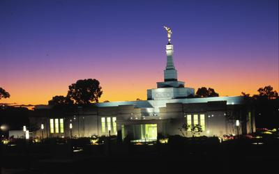
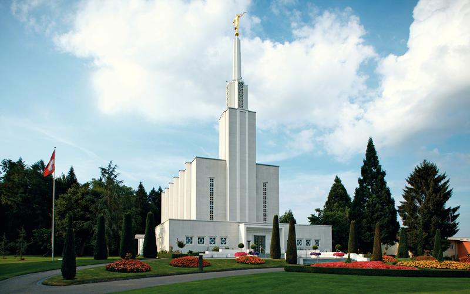

Aba Nigeria Temple LdsAdelaide Australia Temple LdsBarranquilla Columblia TempleAlbuquerque Temple Lds

Evening shot of the Adelaide Australia Temple.Adelaide Australia Temple March 2011Belem Brazil Temple

Bern Switzerland Temple LdsApia Samoa Temple at night.